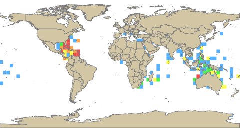
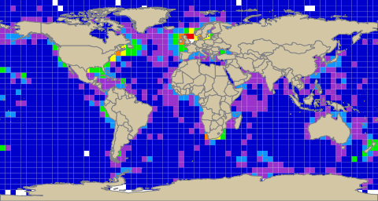
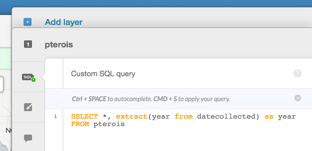
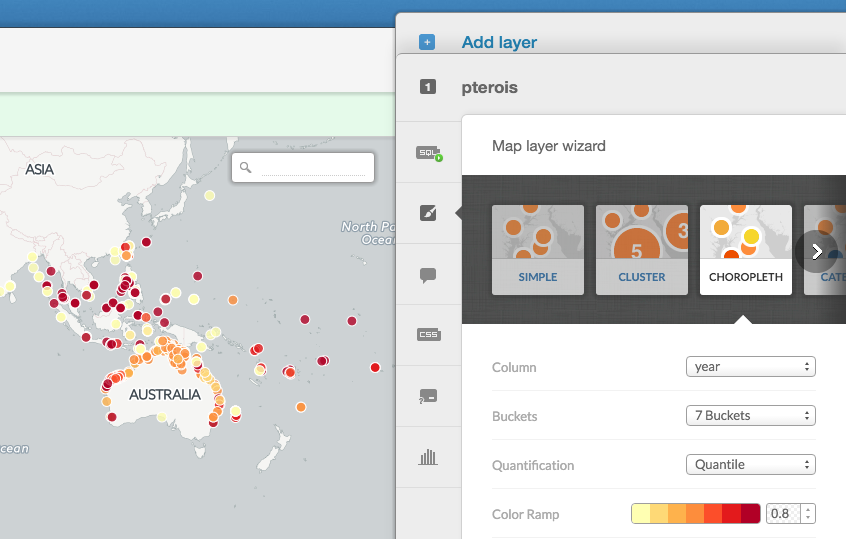
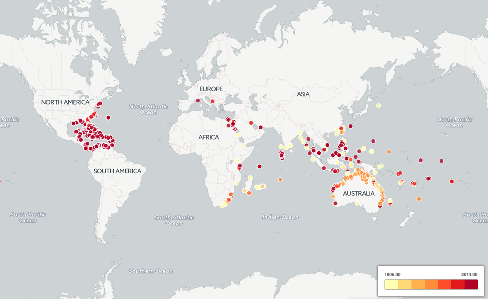
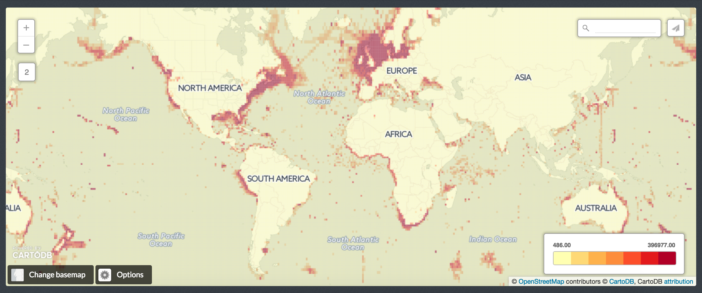
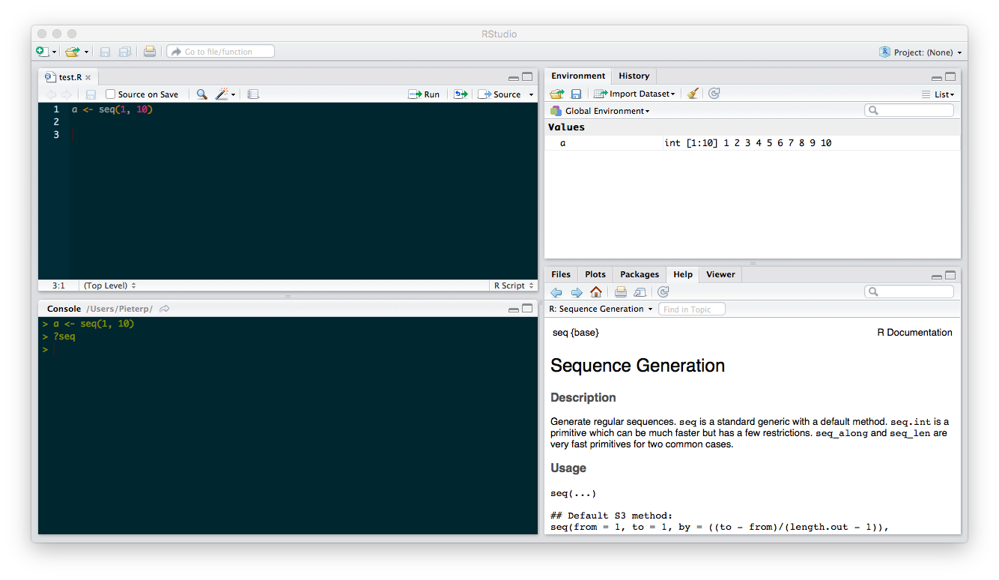
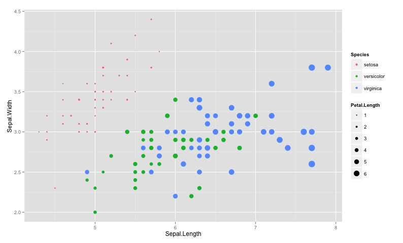
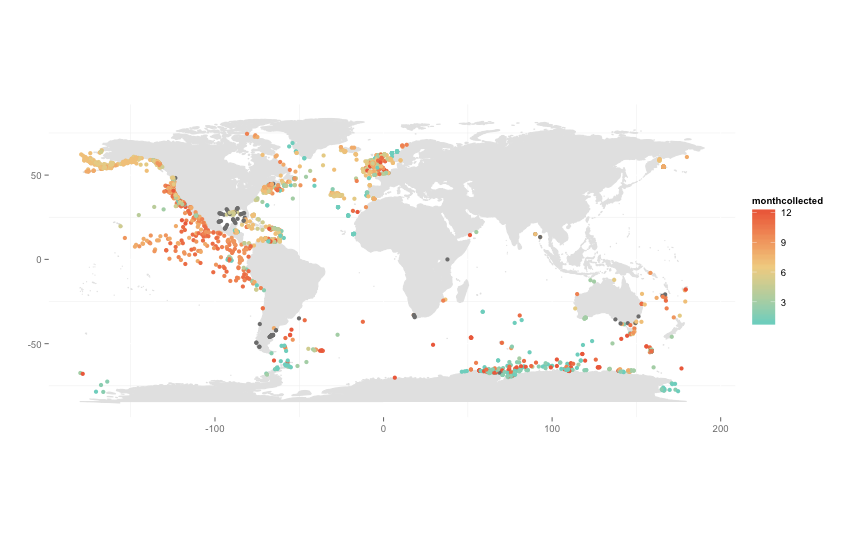
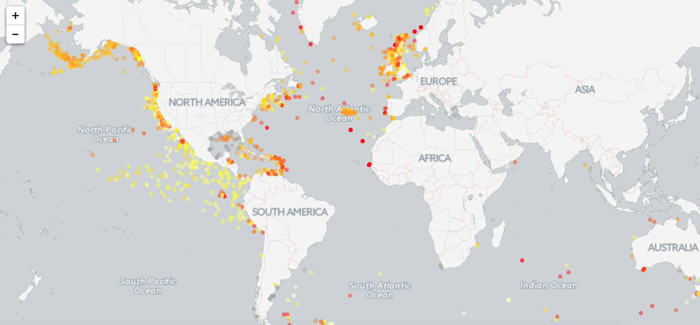

class: center, middle # Data access --- ## Read more: https://github.com/iobis/training/wiki --- <p class="center"><img src="processing.png" width="100%" /></p> --- # Mapper <p class="center"><img src="mapper.png" width="100%"/></p> --- # Mapper 1. Go to the OBIS Mapper application at [http://iobis.org/mapper/](http://iobis.org/mapper/) 2. Click `Click to search & browse taxa` in the `Data Search` panel on the left 3. Enter a taxon name in the search box and select the taxon in the results list 4. Close the `Taxa Search` panel 5. Switch between gridded data and point data using the `Layers` control in the upper right hand corner 6. Select `Show results` in the `Data search` panel 7. Navigate to the `Download` tab 8. Select `Summary` for gridded data or `Points` for individual occurrences 9. Choose a file format to download the data --- <p class="center"><img src="processing.png" width="100%" /></p> --- # OGC services - OBIS uses [GeoServer](http://iobis.org/geoserver/web/) to expose a number of tables or views as [WMS](https://en.wikipedia.org/wiki/Web_Map_Service) (for raster data) or [WFS](https://en.wikipedia.org/wiki/Web_Feature_Service) (for vector data) services. - To view all available layers in GeoServer, click [Layer Preview](http://iobis.org/geoserver/web/?wicket:bookmarkablePage=:org.geoserver.web.demo.MapPreviewPage) in the left sidebar. Keep in mind that the number of features displayed in the previews is limited. --- # OGC services ### SQL views Some of these layers are SQL views. SQL views don't just expose a database table, but execute a parameterized query. For example, the `OBIS:points_ex` layer is a SQL view defined as follows: ```sql SELECT * FROM portal.points_ex WHERE %where% ``` --- # OGC services ### WMS requests We can use the WMS service to generate maps by extending this URL: ```xml http://www.iobis.org/geoserver/wms?SERVICE=WMS&VERSION=1.1.1&REQUEST=GetMap&FORMAT=image/png&SRS=EPSG:4326 ``` We then need to add some parameters: - layers: the layers we want to use for our map, comma separated - bbox: the bounding box of our map, formatted as `minlon,minlat,maxlon,maxlat` - width, height: the image height and width in pixels - styles: which styling to use - viewparams: database table to use, the column to visualize --- # OGC services ### WMS requests: species distribution For plotting species distributions, we can to use the `OBIS:dist_sp` layer which has the following `viewparams`: - where: filter on `valid_id` or `scientific` - table: one of `dist_sp_5deg`, `dist_sp_1deg`, `dist_sp_05deg`, `dist_sp_01deg` - count_column: `nincl` (child taxa included) or `nexcl` (child taxa excluded, default) ```xml http://www.iobis.org/geoserver/wms?SERVICE=WMS&VERSION=1.1.1&REQUEST=GetMap&FORMAT=image/png&SRS=EPSG:4326&LAYERS=OBIS:dist_sp,OBIS:country&VIEWPARAMS=where:valid_id=501083;count_column:nincl;table:dist_sp_5deg&BBOX=-180,-90,180,90&WIDTH=480&HEIGHT=256 ``` --- # OGC services ### WMS requests: species distribution <p class="center"></p> --- # OGC services ### WMS requests: summaries Summaries are available from the `OBIS:summaries` layer. This layer takes the following `viewparams`: - table: one of `map5deg_with_geom`, `map1deg_with_geom`, `map05deg_with_geom`, `map01deg_with_geom` To select the biodiversity summary to be displayed, use the `styles` parameter: - number of records: `styles=summaries_n_rainbow` - number of species: `styles=summaries_s_rainbow` - Shannon diversity: `styles=summaries_shannon_rainbow` - Simpson diversity: `styles=summaries_simpson_rainbow` - ES50: `styles=summaries_es50_rainbow` --- # OGC services ### WMS requests: summaries To display the number of records on a 5 degrees grid: ```xml http://www.iobis.org/geoserver/wms?SERVICE=WMS&VERSION=1.1.1&REQUEST=GetMap&FORMAT=image/png&SRS=EPSG:4326&LAYERS=OBIS:summaries,OBIS:country&styles=summaries_n_rainbow,country&VIEWPARAMS=table:map5deg_with_geom&BBOX=-180,-90,180,90&WIDTH=480&HEIGHT=256 ``` <p class="center"></p> --- <p class="center"><img src="processing.png" width="100%" /></p> --- # Database access - OBIS uses a [PostgreSQL](http://www.postgresql.org/) database, which can be accessed using a desktop tool such as [pgAdmin](http://www.pgadmin.org/). - Use the following configuration to access the OBIS stage database: - host: obisdb-stage.vliz.be - port: 5432 - maintenance DB: obis - username: obisreader - password: [_contact the OBIS data manager to obtain a password_] --- # Database access ### Schema geo This schema is used for geographical features such as grid and area polygons. - cs5d: 5 degree c-squares - cs1d: 1 degree c-squares - cs6m: 0.1 degree c-squares - eezs: Exclusive Economic Zones (EEZ) - iho: IHO Sea Areas - lme: Large Marine Ecosystems (LME) --- # Database access ### Schema obis This is the schema holding the main data tables. - drs: all occurrences - dxs: all occurrences (but more fields) - positions - resources - snames: original scientific names - tnames: validated scientific names --- # Database access ### Schema portal This contains tables and views for output. - points_ex: denormalized occurrences - drs_with_woa: denormalized occurrences - species_summary - dist_sp_01deg - map01deg_with_geom - mapeezs_with_geom --- # Database access ### Occurrence data There are a few things to keep in mind when querying for occurrence data: - Some records will have a an unaccepted scientific name. This means we can not query the `portal.points_ex` table using the `tname` field, if we want to include occurrences recorded with an unaccepted taxon name. - We could use the `valid_id` field instead, but then our results will not include lower rank taxa. --- # Database access ### Occurrence data For example, to retrieve all occurrences of _Phocoena_, we will need to: - Link all occurrences to their respective accepted taxon. - Check if these accepted taxa either: - correspond to `Phocoena`: the `valid_id` equals _Phocoena_'s `tnames.id` - have `Phocoena` as a parent taxon: the `storedpath` includes the full taxonomic path of _Phocoena_, i.e. the concatenation of _Phocoena_'s `tnames.storedpath` and `tnames.id` --- # Database access ### Occurrence data All this can be translated into the query below: ```sql with taxon as ( select id, storedpath from obis.tnames where tname = 'Phocoena' ) select t.tname as accepted, p.* from portal.points_ex p left join obis.tnames t on t.id = p.valid_id inner join taxon on t.id = taxon.id or t.storedpath like taxon.storedpath || taxon.id || 'x%' order by p.tname; ``` --- # Database access ### Occurrence data The results of this query will include: - Occurrences of _Phocoena_ - Occurrences of _Phocoena_ species and subspecies such as _Phocoena phocoena_ and _Phocoena phocoena relicta_ - Occurrences of _Australophocaena dioptrica_, which has _Phocoena dioptrica_ as its accepted name --- class: center, middle # Data processing --- <p class="center"><img src="processing.png" width="100%" /></p> --- # Data processing: CartoDB (1) ### Goal The goal of this example is to visualize the distribution range expansion of _Pterois volitans_. <p class="center"><img src="processing.png" width="60%" /></p> --- # Data processing: CartoDB (1) ### Adding the data In CartoDB, go to `Your datasets > New dataset`, drag or upload the CSV file, and click `Connect dataset`. The go to `Your maps > New map`, select the dataset you just uploaded, and click `Create map`. --- # Data processing: CartoDB (1) ### Getting the occurrence year The data downloaded from the mapper contains a date, but CartoDB doesn't allow using date fields for visualization. However, we can extract the year from the date using SQL: <p class="center"></p> --- # Data processing: CartoDB (1) ### Visualizing the occurrence year To color the occurrences according to year, use the choropleth visualization and select the year column. <p class="center"></p> --- # Data processing: CartoDB (1) <p class="center"></p> --- # Data processing: CartoDB (2) ### Goal The goal of this example is to visualize diversity indices. <p class="center"><img src="processing.png" width="60%" /></p> --- # Data processing: CartoDB (2) ### Downloading the data To create this map we will use the `OBIS:summaries` layer. This layer contains statistics per grid cell such as number of records and number of species, as well as some biodiversity indices. To download the shapefile for this layer, use this URL: ```xml http://www.iobis.org/geoserver/OBIS/ows?service=WFS&version=1.0.0&request=GetFeature&typeName=OBIS:summaries&viewparams=table:map1deg_with_geom&outputformat=shape-zip ``` --- # Data processing: CartoDB (2) ### Displaying different summaries To display the number of records per grid cell, go to the `Map layer wizard`, select `Choropleth` and change `Column` to `n`. You may also want to change the color ramp and the color ramp transparency, and remove the polygon stroke. <p class="center"></p> --- <p class="center"><img src="processing.png" width="100%" /></p> --- class: center, middle # A very quick introduction to R --- # A very quick introduction to R <p class="center"></p> --- # A very quick introduction to R ```R 1 + 2 ``` ```R a <- 1 + 2 ``` ```R a > 13 ``` ```R b <- "banana" ``` ```R rep(b, 3) ``` ```R seq(1, 10) ``` ```R c(rep(b, 3), "apple", "orange") ``` --- # A very quick introduction to R ```R ?data.frame ``` ```R data.frame(x=1:10, name="penny") ``` --- # A very quick introduction to R ```R data(iris) ``` ```R iris ``` ```R names(iris) ``` ```R plot(iris$Sepal.Length, iris$Petal.Width) ``` --- # A very quick introduction to R ```R install.packages("ggplot2") ``` ```R require(ggplot2) ``` ```R ggplot() + geom_point(data=iris, aes(x=Sepal.Length, y=Sepal.Width)) ``` ```R ggplot() + geom_point(data=iris, aes(x=Sepal.Length, y=Sepal.Width, colour=Species)) ``` ```R ggplot() + geom_point(data=iris, aes(x=Sepal.Length, y=Sepal.Width, colour=Species, size=Petal.Length)) ``` --- # A very quick introduction to R <p class="center"></p> --- # Data processing: R (1) ### Goal The goal of this example is to visualize killer whale distribution and migration. <p class="center"><img src="processing.png" width="60%" /></p> --- # Data processing: R (1) ```R require(ggplot2) require(mapdata) require(lubridate) data <- read.csv(url("https://raw.githubusercontent.com/iobis/training/master/demo/orca/orca_mapper.csv"), stringsAsFactors=FALSE) data$date <- parse_date_time(data$datecollected, "Y%m%d%") data$month <- month(data$date) world <- map_data(map="world") ggplot(world, aes(long, lat)) + geom_polygon(aes(group=group), fill="gray90", color="gray90") + theme(panel.background=element_blank()) + coord_fixed(ratio=1) + geom_point(data=data, aes(x=longitude, y=latitude, colour=month)) + scale_colour_gradientn(colours=c("#7ED5C8", "#F2D391", "#EF6E4A")) ``` --- # Data processing: R (1) <p class="center"></p> --- # Data processing: R (1) ```R require(leaflet) colors <- heat.colors(12)[data$month] colors <- substr(colors, 1, 7) colors[is.na(colors)] <- "#aaaaaa" m <- leaflet() m <- addProviderTiles(m, "CartoDB.Positron") m <- addCircleMarkers(m, data=data.frame(lat=data$latitude, lng=data$longitude), radius=3, weight=0, fillColor=colors, fillOpacity=0.5) m ``` --- # Data processing: R (1) <p class="center"></p> --- class: center, middle # DIY